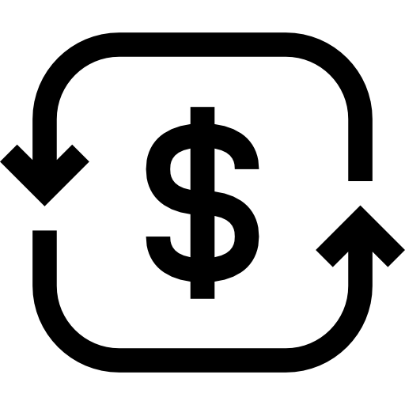

경제 뉴스 브리핑 — 2026년 10월 22일 (목)| 종목 | 가격 | 변동 |
|---|---|---|
| 🔴 S&P 500 | 7,663.43 | ▼ 1.21% |
| 🔴 나스닥 | 26,008.86 | ▼ 2.60% |
| 🔴 반도체 ETF | 475.69 | ▼ 6.79% |
| 🔴 엔비디아 | 212.21 | ▼ 4.40% |
| 🔴 COMEX 금 | 4,039.40 | ▼ 2.67% |
| 🟢 달러/원 환율 | 1,326.05 | ▲ 0.03% |
| 🟢 WTI 원유 | 99.55 | ▲ 2.47% |
현대차, 인도네시아 발리에 전기버스 11대 공급…"동남아 공략 확대"
현대자동차가 인도네시아 발리에 전기버스를 공급하며 동남아시아 시장 진출을 가속화하고 있다. 이번 공급은 수라바야에 이어 발리 지역으로의 진출을 의미하며, 충전 인프라 구축도 함께 진행될 예정이다.
[종합] 솔리다임 美 상장 결국 중단…주주반발·주가하락에 금융당국 압박
SK하이닉스의 자회사인 솔리다임의 미국 상장이 중단되었다. 이는 주주들의 반발과 주가 하락으로 인해 금융당국의 압박이 커진 결과로, SK하이닉스는 여전히 솔리다임의 성장 필요성을 강조하고 있다.
한·베 여성경제인 100여 명 경북서 한자리…글로벌 경제협력 확대
한국과 베트남의 여성경제인들이 경북에서 경영연수를 개최하며 기업 교류와 해외시장 진출 협력을 모색하고 있다. 이번 행사에는 베트남 타이응우엔성 대표단도 참석하여 글로벌 경제 협력을 강화하고자 한다.
삼성생명, 퇴직연금 앱 'SSUM 라운지' 개편…투자·연금 정보 강화
삼성생명이 퇴직연금 앱을 개편하여 주요 시장 지표를 한눈에 확인할 수 있는 기능을 추가했다. 또한, 연금 관리에 필요한 다양한 콘텐츠를 제공하여 사용자 편의성을 높였다.
美 주택담보대출 금리 7.32%…두 달 만에 첫 하락
미국의 30년 만기 고정 주택담보대출 금리가 두 달 만에 하락했다. 이는 최근 국채금리의 하락과 관련이 있으며, 주택 구매자들의 대출 부담이 소폭 완화된 것으로 분석된다.
US Stock Futures Slip as Tech Earnings Rally Fades
미국 주식 선물은 대형 기술 기업들의 혼합된 실적 발표로 인해 하락세를 보였다. 인공지능 관련 주식의 반등 지속 가능성에 대한 의구심이 커지며 시장의 불확실성이 증가하고 있다.
Tesla reports Q3 earnings beat, positive free cash flow, and better-than-expected capex
테슬라가 3분기 실적을 발표하며 예상보다 높은 수익과 긍정적인 자유 현금 흐름을 기록했다. 또한, 자본 지출이 예상보다 나아졌다는 점에서 투자자들의 기대감을 높이고 있다.
IBM Stock Rallies as Earnings Offer Glimmer of Recovery
IBM이 3분기 실적에서 예상치를 초과하며 주가가 상승했다. 그러나 회복을 위한 도전 과제가 여전히 존재하여 향후 전망에 대한 신중한 접근이 필요하다.